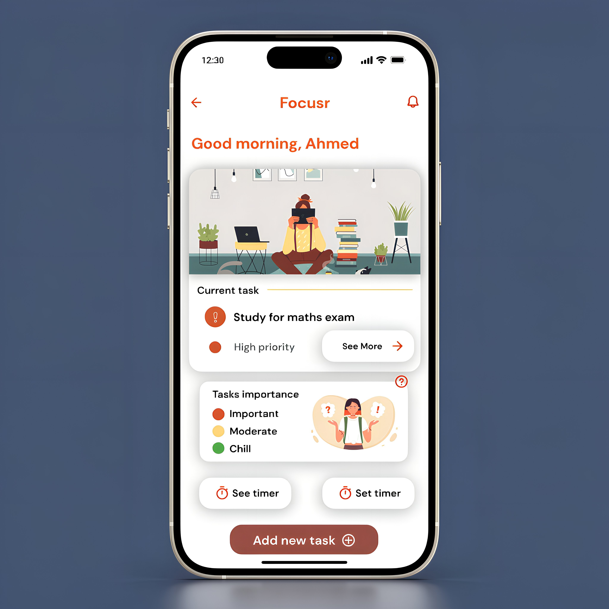
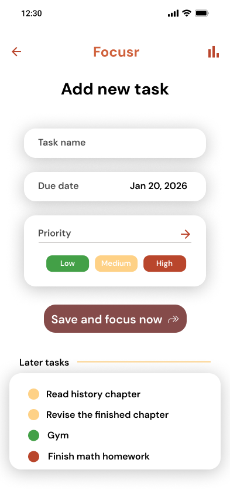
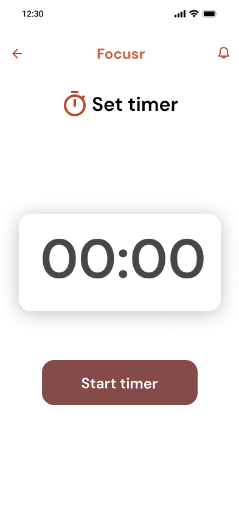
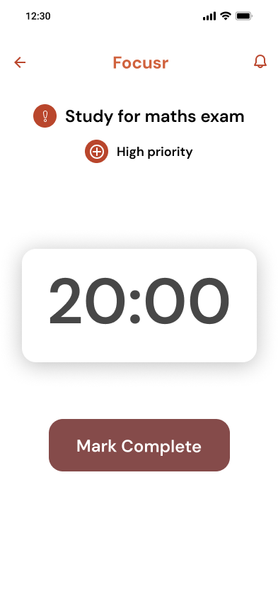
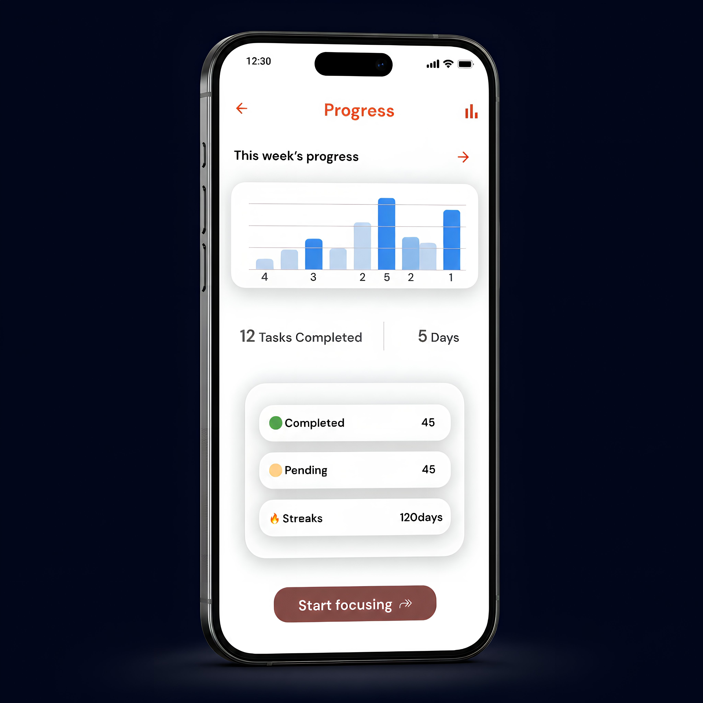
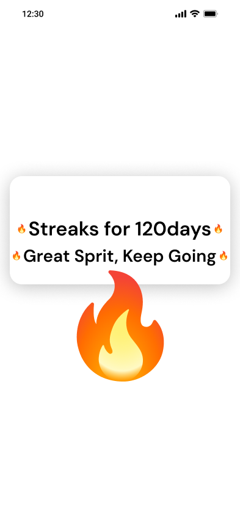

Concept exploration · 2024
Focusr.
A mobile productivity concept. The idea: show one task. Most apps show twenty.
Most productivity apps try to show you everything at once. Every list, every project, every backlog item, all on the home screen. Focusr does the opposite. Show one task. Make missing it cost the user something. A mobile concept built around single-task focus and loss-aversion as the motivator.
Too many tasks kills productivity.
The app says this on the loader screen because it's the whole product idea. Open Todoist or Things and you see 20 things at once. Open Focusr and you see one. That isn't a styling decision. It's the hypothesis. Decision fatigue is the actual problem most productivity apps make worse, not better.
Below the current task is a small legend explaining the priority colors, and one button: Add new task. That's it. Other tasks, settings, progress are all one tap away. Never on the home screen.

Important
High priority
Miss it and you lose the most points. The streak is at risk.
Moderate
After the red
Lower cost on miss. Designed to be done after the high-priority slot clears.
Chill
Low priority
Smallest point penalty. Hobbies, optional reading, maintenance work.
Show one task. Make missing it cost something.
Add. Focus. Win or lose points.
The whole daily cycle is 4 screens. Add a task and pick its priority. Set a focus timer. Run the session. Mark it complete, or skip it and watch the streak counter drop. Every screen has one primary action. No tab bar, no nav drawer, no dashboard.
01.
Add a task
Name it. Pick a date. Tag it Low / Medium / High.

02.
Set the timer
Commit to a focus duration. The screen has nothing else on it on purpose.

03.
Run the session
Active task name and priority sit above the timer. Mark Complete is the only action.



Decision log
Four product decisions behind the design.
Why show one task, not a list?
Decision fatigue is the actual bottleneck. Open Todoist, see 20 things, choose nothing. Open Focusr, see one thing, do it. The job of the app is to take the choice away, not give the user another decision to make.
Why penalize missing a task, not just reward completing one?
Loss aversion is about 2x stronger than the equivalent gain (Kahneman and Tversky). Once you've built a streak, the threat of losing it motivates you in a way pure rewards don't. The risk: that motivation can turn into anxiety for some users. That's the diary study question I'd need to answer before shipping.
Why three priorities, not five or seven?
Five-tier priority systems usually collapse to "high vs everything else" in real use. Three forces the user to actually rank: this is the most important thing today. The traffic-light metaphor (red, yellow, green) is also instantly readable. No legend needed.
Why hide the streak counter on the home screen?
A streak counter that's always visible becomes an anxiety trigger. Every time the user opens the app, they're reminded of what they could lose. Showing the streak only after the day's task is done makes it a reward, not a stress signal.
Try the flow yourself.
The full screen flow is wired up in Figma. Step through Add a task → Set the timer → Run a session → Win or lose points. Best on desktop.
A concept I would want to test before shipping.
Loss aversion is well-supported in research as a motivator. But whether it works as a product mechanic depends on the user. Streak loss motivates some people. It produces anxiety and quiet abandonment in others. Before I handed this to engineering, I would want a small prototype and a diary study to see whether the streak feature lands as commitment or as pressure.
I'm showing this as a concept exploration, not a case study. The thinking is real. The design system is consistent. The hypothesis holds up to research. But the validation work hasn't been done.
- TypePersonal exploration
- ToolsFigma
- Deliverable11 screens, component library, priority and streak system
- StatusConcept. Not shipped. No user testing yet.
- Next stepRun a diary study before any production scope